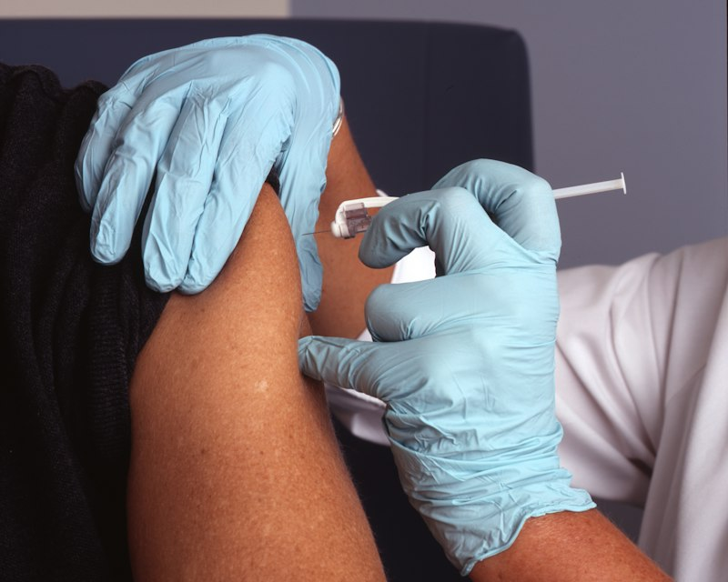

Nasha Mukti Kendra Ara is proud to operate in direct association with Kaushalya Samay Hospital, Ara, Bhojpur (Bihar). We were founded with a single mission: to provide world-class, medically safe, and culturally compassionate de-addiction care to patients suffering from substance use disorders.
Unlike unregulated centres, our facility is anchored within a full-fledged medical hospital. This means every patient is protected by 24/7 on-call physicians, modern pathology testing, immediate emergency intervention, and psychiatric counseling under licensed mental healthcare practitioners.
We view addiction as a complex neurological and psychological disease rather than a character flaw. Our scientific rehabilitation model bridges the gap between acute detox and sustained, lifelong relapse prevention.

To eliminate substance abuse across Ara, Bhojpur, and Bihar by offering accessible, scientifically proven, and compassionate medical treatment that restores health and family peace.
To create an addiction-free society where individuals trapped in the grip of drugs and alcohol receive timely psychiatric care, warm family support, and empowering vocational reintegration.
Zero Discrimination • 100% Patient Confidentiality • Evidence-Based Medicine • Warm Family Involvement • Lifelong Post-Rehab Relapse Prevention.